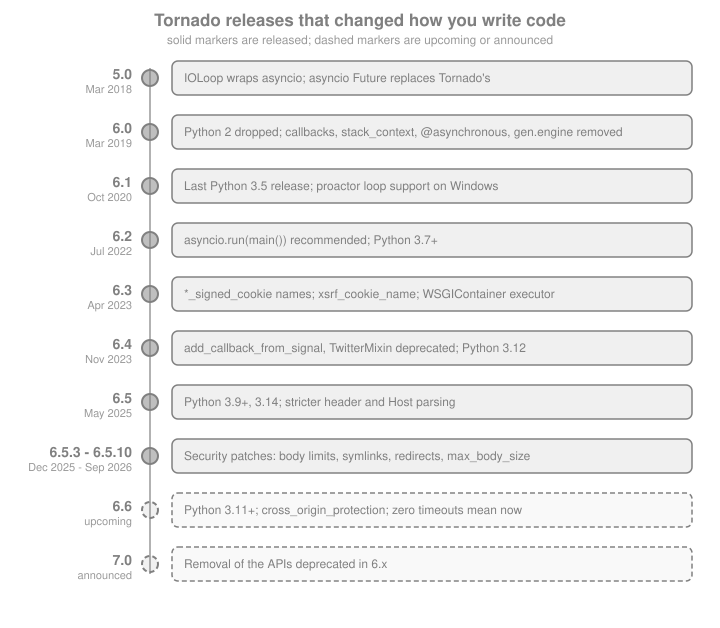

What’s Changed & Migration
|
This content was generated with the assistance of AI and should be verified against the official documentation before being relied on in production. |
This page is written against Tornado 6.5.10 (released 2026-09-15) on Python 3.13, checked on 2026-10-07. Tornado 6.6 is
only available as the alpha 6.6a1 (2026-09-22) and its final notes are still dated "Oct XX, 2026", so everything listed
here under 6.6, 6.7 and 7.0 is upcoming or announced and can still change; the 6.6 entries come from the development
release notes, not from running code. Every example that does not say otherwise was executed against 6.5.10, through
real servers bound to a loopback port or through AsyncHTTPTestCase. The running scenario is Bookshelf Live: a small
service that was written for Tornado 4 or 5 and has to be brought to 6.5.
Tornado has been through two generations of API in its life. Up to 4.x it carried its own Future, its own coroutine
runner (@gen.coroutine, @gen.engine, @web.asynchronous), its own context mechanism (stack_context) and callback
arguments on nearly every function. Version 5.0 (2018) turned the IOLoop into a wrapper around the asyncio event loop,
5.1 deprecated the callback era, and 6.0 (2019) removed it. Since then the releases have been smaller: startup moved to
asyncio.run, cookies and XSRF options were renamed or extended, request parsing got hard limits after a series of
denial-of-service reports, and the 6.6 development branch introduces origin-based cross-site protection. Most tutorials,
Stack Overflow answers and older books still show the pre-6.0 style, so this page is the translation table: what a
snippet from those sources means today. Each topic page of this section already states the changes that touch it; this
page collects them in one place and adds the upgrade procedure. The same page exists for the sibling frameworks in
Flask: What’s Changed & Migration and
Pyramid: What’s Changed & Migration; FastAPI’s counterpart is
spread over FastAPI: Introduction & Architecture.
The Releases at a Glance

| Release | Date | What matters to application code |
|---|---|---|
5.0 |
2018-03-05 |
|
5.1 |
2018-07-12 |
Deprecation release: callbacks, |
6.0 |
2019-03-01 |
Python 2 dropped; everything deprecated in 5.1 removed; type annotations added |
6.1 |
2020-10-30 |
Last release for Python 3.5; Windows proactor loop supported; SHA-512 ETags |
6.2 |
2022-07-03 |
Python 3.7+; |
6.3 |
2023-04-17 |
Python 3.8+; |
6.4 |
2023-11-28 |
Python 3.12; |
6.5 |
2025-05-15 |
Python 3.9+, 3.14 and experimental free-threading; CVE-2025-47287; strict header and |
6.5.1 to 6.5.10 |
2025-05-22 to 2026-09-15 |
Mostly security fixes: parsing limits, cookie validation, symlinks, redirects, client body limits |
6.6 |
upcoming (alpha 6.6a1) |
Python 3.11+; |
6.7 and 7.0 |
announced |
Removal of APIs deprecated in 6.x; cross-origin protection expected to become the default in 6.7 |
Source: Tornado: Release notes
How Tornado Deprecates Things
Tornado announces a removal in the release notes of the version that deprecates it, and since 5.1 it also emits a
DeprecationWarning when the deprecated API is used, wherever the call site can detect it. Python hides
DeprecationWarning outside __main__ and test runners by default, which is why the 5.1 notes tell you to run the
application with the -Wd flag or PYTHONWARNINGS=d. Some deprecations are documentation-only: the old name keeps
working and nothing is printed (for example the *_secure_cookie aliases, shown below). That makes the release notes,
not the warning output, the authoritative list, and it is why the checklist at the end of this page includes a text audit
as well as a warnings run. Tornado also follows a rhythm of its own: removals have waited for a major version in the past
(callbacks went in 6.0, TwistedResolver was announced for 7.0), but the 6.6 notes show that security concerns can bring
removals forward, so the line folding that 6.5 deprecated for 7.0 is already gone in 6.6.
Tornado 5.0 and 5.1: asyncio Becomes the Loop
Tornado 5.0 (2018) is the release after which "Tornado code" and "asyncio code" can share one event loop. Everything in older tutorials that mentions Tornado’s own futures or its own loop implementations predates it.
| Change | What it means today |
|---|---|
|
|
|
Futures need a running loop to be created; callbacks run on the next loop iteration; |
|
Cancellation works; the coroutine runner of 4.x is gone |
|
Use |
|
It no longer returns a process-wide singleton, so using it from another thread to reach the main loop breaks; keep your own reference and call |
|
Not needed: asyncio owns the loop |
|
Run Python with |
|
Awaitable way to call blocking code, since |
|
The client error class is not |
Tornado 5.1 (2018-07-12) was the warning release for everything 6.0 removed: the callback arguments, @asynchronous,
tornado.stack_context, gen.engine, gen.Task and the YieldPoint classes, return_future, the Twisted reactors
and tornado.wsgi.WSGIApplication. It also gave PeriodicCallback a jitter argument and made
AsyncHTTPTestCase.fetch take raise_error.
Source: Tornado: What’s new in 5.0 and What’s new in 5.1
Tornado 6.0: What Was Removed
Tornado 6.0 (2019-03-01) dropped Python 2.7 and 3.4 (minimum 3.5.2) and deleted everything 5.1 had deprecated. If
code from before 2019 fails to import or raises TypeError, it is one of the entries below.
| Removed | Use instead |
|---|---|
|
|
|
|
|
Exceptions propagate through |
|
|
|
|
|
Run Twisted on the asyncio reactor, next to Tornado on the same loop |
|
|
|
Override |
|
|
Behaviour changed as well. WebSocketHandler.get became a coroutine (overriding it was never recommended; use prepare
or open). raise_error=False on AsyncHTTPClient.fetch now only suppresses errors for completed responses with
non-200 status codes, no longer connection failures. AsyncTestCase cancels pending coroutines in tearDown, so a test
that expects background work to survive teardown may see asyncio.CancelledError. The default HTTP client no longer
turns non-POST redirects into GET and treats 301 like 302 and 303 in that respect.
The next example shows what each removal looks like in practice. The first block is a Tornado 4 style handler, kept as text because it can no longer be imported; the second runs on 6.5.10 and proves the removals.
# norun (Tornado 4 style, does not work on 6.x)
import tornado.web
from tornado import gen, httpclient
class CoverHandler(tornado.web.RequestHandler):
@tornado.web.asynchronous
@gen.engine
def get(self, isbn):
client = httpclient.AsyncHTTPClient()
response = yield gen.Task(client.fetch, "http://covers.internal/%s" % isbn)
self.write(response.body)
self.finish()Source: Tornado: What’s new in 6.0
import asyncio
import contextlib
import importlib
from tornado import gen, httpclient, httpserver, netutil, web, wsgi
@contextlib.asynccontextmanager
async def serve(app):
"""Run `app` on a free loopback port for the duration of the block."""
sockets = netutil.bind_sockets(0, "127.0.0.1")
server = httpserver.HTTPServer(app)
server.add_sockets(sockets)
port = sockets[0].getsockname()[1]
try:
yield f"http://127.0.0.1:{port}"
finally:
server.stop()
await server.close_all_connections()
class CoverHandler(web.RequestHandler):
async def get(self, isbn):
client = httpclient.AsyncHTTPClient()
response = await client.fetch(self.application.settings["covers_url"] + "/" + isbn)
self.write(response.body)
class FakeCovers(web.RequestHandler):
def get(self, isbn):
self.write(f"cover-of-{isbn}")
async def main():
covers = web.Application([(r"/(\d+)", FakeCovers)])
async with serve(covers) as covers_url:
app = web.Application([(r"/covers/(\d+)", CoverHandler)], covers_url=covers_url)
async with serve(app) as base:
response = await httpclient.AsyncHTTPClient().fetch(base + "/covers/9781")
print(response.body.decode())
# the 4.x idioms are gone
try:
await httpclient.AsyncHTTPClient().fetch(base + "/covers/9781", callback=print)
except TypeError as exc:
print("callback=:", exc)
asyncio.run(main())
print("web.asynchronous:", hasattr(web, "asynchronous"))
print("gen.engine:", hasattr(gen, "engine"), "gen.Task:", hasattr(gen, "Task"))
print("wsgi.WSGIApplication:", hasattr(wsgi, "WSGIApplication"))
try:
importlib.import_module("tornado.stack_context")
except ModuleNotFoundError as exc:
print("stack_context:", exc)Source: Tornado user’s guide: Coroutines
The callback= call fails with a TypeError raised by the request constructor, because the unknown keyword is passed on
to HTTPRequest. A migration that leaves one forgotten callback= argument therefore fails loudly on the first request
that reaches it, which is better than the silent failure mode of 5.1 and earlier.
Tornado 6.1 and 6.2: Starting the Loop the Modern Way
Tornado 6.1 (2020-10-30) was the last release for Python 3.5 and the first with proper Windows support through
asyncio’s proactor loop: Tornado now runs a selector in a second thread when it is given a proactor loop, so you no
longer have to select the selector loop by hand (Unix remains the supported production platform). Its other visible
changes: a User-Agent of Tornado/$VERSION is sent by default, request_timeout and connect_timeout may be zero to
disable the timeout, default ETags use SHA-512 instead of MD5, and a 303 redirect always becomes a GET in
simple_httpclient.
Tornado 6.2 (2022-07-03) is the release that changed how an application starts. Python 3.10 began deprecating
asyncio.get_event_loop() when no loop is running, which invalidated the pattern that Tornado’s documentation had used for
a decade: build an Application, call listen, then IOLoop.current().start() at module level. The recommended pattern
is now to start the loop with asyncio.run and to create servers inside the coroutine.
| Change | Consequence |
|---|---|
Recommended startup is |
Create the |
|
Use |
|
Start the loop first; the concept of "current but not running" goes away |
|
Create loops in threads explicitly with |
Multi-process |
|
|
Reverted in 6.3: they are supported again; |
|
The default resolver uses a thread pool; |
Python 3.7+; client-side |
Code that relied on unverified TLS must now say so explicitly |
|
A slow callback no longer starts overlapping copies |
|
Reject any non-empty body for an endpoint that takes none |
Startup is the most common change that tutorials get wrong, so here are both forms. The legacy form is kept as text.
# norun (legacy startup: works on old versions, warns or breaks on current Python)
import tornado.ioloop
import tornado.web
app = tornado.web.Application([(r"/", MainHandler)])
app.listen(8888)
tornado.ioloop.IOLoop.current().start()import asyncio
from tornado import httpclient, httpserver, netutil, web
class Health(web.RequestHandler):
def get(self):
self.write({"status": "ok"})
def make_app() -> web.Application:
return web.Application([(r"/health", Health)])
async def main() -> None:
shutdown = asyncio.Event()
app = make_app()
# port 0: the operating system picks a free one; a real service reads its port from configuration
sockets = netutil.bind_sockets(0, "127.0.0.1")
server = httpserver.HTTPServer(app)
server.add_sockets(sockets)
port = sockets[0].getsockname()[1]
response = await httpclient.AsyncHTTPClient().fetch(f"http://127.0.0.1:{port}/health")
print(response.code, response.body.decode().strip())
shutdown.set() # in production a signal handler sets this event
await shutdown.wait() # main() then returns and asyncio.run closes the loop
server.stop()
await server.close_all_connections()
if __name__ == "__main__":
asyncio.run(main())Binding to port 0 and reading the port back is only for the example; the shutdown event shows the shape a real service
has: the coroutine waits on an asyncio.Event that a signal handler (registered with
asyncio.get_running_loop().add_signal_handler) sets, and returns, so asyncio.run can close the loop cleanly.
add_callback_from_signal is not the replacement for this; it is deprecated (see 6.4).
The single call that tutorials used to start every process was IOLoop.current().start() at module level. On Python
3.12 and later, with no running loop, IOLoop.current() and IOLoop.make_current() are exactly the calls that produce
deprecation warnings, as the next example shows.
import warnings
from tornado import ioloop
async def probe():
loop = ioloop.IOLoop.current()
with warnings.catch_warnings(record=True) as caught:
warnings.simplefilter("always")
loop.make_current() # deprecated since 6.2
alias = ioloop.IOLoop.instance() # deprecated alias, documentation only
print("instance() is current():", alias is loop)
for item in caught:
print(item.category.__name__ + ":", item.message)
import asyncio
asyncio.run(probe())Source: Tornado: tornado.ioloop
IOLoop.instance() prints no warning at all in 6.5.10 even though its documentation calls it a deprecated alias for
IOLoop.current(): this is one of the silent deprecations mentioned above. The make_current call does warn.
Source: Tornado: What’s new in 6.2
Scripts That Only Need a Coroutine
For a one-shot script (a migration, a cache warm-up) that is not a server, asyncio.run(coroutine()) is the right call
too. IOLoop.current().run_sync(coroutine) still exists and still takes an optional timeout; it is convenient when the
timeout matters, and it no longer needs IOLoop.current().start() before it.
import asyncio
from tornado import ioloop
async def warm_cache() -> str:
await asyncio.sleep(0.01)
return "warmed"
# plain script, no loop running yet: both forms work
print(asyncio.run(warm_cache()))
print(ioloop.IOLoop.current().run_sync(warm_cache, timeout=5))Source: Tornado: IOLoop.run_sync
Tornado 6.3: Names and Cookies
Tornado 6.3 (2023-04-17) raised the minimum Python to 3.8, added Python 3.12, and made import tornado enough to use
tornado.web.RequestHandler (submodules are imported on demand). Its deprecations and additions that matter for
application code:
| Change | Replacement or effect |
|---|---|
|
|
|
Clear each known cookie with |
|
Allows the |
|
Runs the WSGI application on a thread pool, so a synchronous app no longer blocks the loop |
|
Both stay supported; |
|
Override it to read client credentials from a secret store instead of the |
|
Announced: in 7.0 it matches WARNING and above regardless of logging configuration unless |
Receiving large fragmented WebSocket messages |
No longer quadratic in the number of fragments |
Python 3.7 dropped |
Minimum 3.8 |
The signed cookie rename is the change you will meet in code copied from older answers. The next example sets a signed cookie, reads it back with both names and checks that a tampered cookie is rejected.
import secrets
import unittest
from tornado import httputil, testing, web
class SetSession(web.RequestHandler):
def get(self):
# legacy: self.set_secure_cookie("shelf", "42")
self.set_signed_cookie("shelf", "42", httponly=True, samesite="Lax")
self.write("ok")
class ReadSession(web.RequestHandler):
def get(self):
current = self.get_signed_cookie("shelf")
legacy = self.get_secure_cookie("shelf") # alias of get_signed_cookie
self.write({"current": current and current.decode(), "legacy": legacy and legacy.decode()})
class CookieNames(testing.AsyncHTTPTestCase):
def get_app(self):
return web.Application(
[(r"/set", SetSession), (r"/read", ReadSession)],
cookie_secret=secrets.token_hex(32),
)
def test_rename(self):
issued = self.fetch("/set").headers["Set-Cookie"]
cookie = issued.split(";")[0]
good = self.fetch("/read", headers={"Cookie": cookie})
self.assertEqual(good.body, b'{"current": "42", "legacy": "42"}')
tampered = self.fetch("/read", headers={"Cookie": cookie[:-2] + "xx"})
self.assertEqual(tampered.body, b'{"current": null, "legacy": null}')
result = unittest.TextTestRunner(verbosity=0).run(unittest.defaultTestLoader.loadTestsFromTestCase(CookieNames))
assert result.wasSuccessful()
print("cookie rename test passed")The secret is generated with secrets.token_hex for the test only; a real deployment reads a stable cookie_secret
from the environment or a secret store, because a secret that changes at every start logs every user out. Rotating it
with cookie_secret and key_version is covered in
Authentication & Signed Cookies. The rename is cosmetic, but
it removes a long-standing confusion: "secure" cookies are signed, not encrypted, and have nothing to do with the
Secure attribute.
Source: Tornado: What’s new in 6.3
Tornado 6.4: Deprecations Ahead of 7.0
Tornado 6.4 (2023-11-28) added Python 3.12 support and kept its feature list small.
| Change | Replacement or effect |
|---|---|
|
|
|
No replacement in Tornado: Twitter’s old OAuth 1.0a endpoints are what it implemented; use a maintained client or |
|
Never used; remove it |
Autoreload works when the program runs as a directory; |
Development convenience only; autoreload stays off in production |
|
Fixes "Task was destroyed but it is pending" warnings |
|
Prefer timezone-aware datetimes everywhere |
Stricter |
Fixes request-smuggling behind some proxies |
Cookie header parsing no longer quadratic (6.4.2, CVE-2024-7592) |
Upgrade: one malicious header could keep the loop busy |
TwitterMixin is a good example of an API that is still importable and still looks fine in review but is end-of-life.
The deprecation of the stack of third-party mixins did not stop there: OpenIdMixin (OpenID 2.0, rarely offered by
identity providers any more) was deprecated in 6.5.8, and the 6.6 notes move its removal to 6.7.
Source: Tornado: What’s new in 6.4
Tornado 6.5: A Stricter HTTP Parser
Tornado 6.5 (2025-05-15) raised the minimum to Python 3.9, added 3.14 and an experimental build for the free-threaded 3.13
(there are no prebuilt wheels for it in this release), and fixed CVE-2025-47287: a malformed multipart/form-data request
could log several warnings and amount to a denial of service; the parser now raises at the first error.
The largest group of changes is stricter HTTP parsing. They rarely matter to application code but they matter to the proxies, test clients and old devices in front of it:
-
request start lines may not contain control characters, and a method name with invalid characters is answered with 400, not 405;
-
header names are limited to the characters the RFCs permit, control characters are rejected in incoming header values, and outgoing headers follow the RFC character set (tab allowed, DEL not);
-
the
Hostheader is restricted to permitted characters; more than oneHostheader, or none on a request that is not HTTP/1.0, is an error (6.5.2 turned the logging of an invalidHostinto a plain 400 response, logged as a warning); -
invalid
If-Modified-Sinceheaders are ignored instead of causing a 500; -
%characters in the log message ofHTTPErrorare no longer doubled when there are no arguments. Direct access toHTTPError.log_messageandargsis deprecated; use the newget_message(); -
WebSocket
ping_timeoutgreater thanping_intervalis no longer supported, and the defaultping_timeoutequalsping_interval; -
TwistedResolverwas deleted outright because RFC 8482 made it fail for most names; -
bind_unix_socketsupports the Linux abstract namespace; -
obs-fold continuation lines in HTTP headers and carriage returns without line feeds as separators are deprecated (6.6 removes folding, see below), and the
callbackargument ofwebsocket_connectis deprecated (on_message_callbackis not).
6.5.2 also restored the host argument of HTTPServerRequest, whose removal without a warning in 6.5.0 had been a
mistake; it is now deprecated again, with removal scheduled for 6.7.
The HTTPError change is easy to demonstrate. Error messages used to contain the placeholders and arguments of a
logging call; the supported way to read the final text is get_message().
from tornado import httpclient, web
error = web.HTTPError(404, "Book %s not found", 9781)
print(error.get_message()) # fully substituted text, for logs and error bodies
print(error.status_code)
# the client-side error is a different class with a different name since 5.1
print(httpclient.HTTPError is httpclient.HTTPClientError)
print(issubclass(httpclient.HTTPClientError, web.HTTPError))Source: Tornado: web.HTTPError
Source: Tornado: What’s new in 6.5.0
The 6.5.x Security Releases
Most of the 6.5.x releases are security releases. Together they changed defaults that applications can feel: form and upload limits, cookie arguments, redirect behaviour of the HTTP client and the static file handler. Upgrading the patch version is not optional for an internet-facing service, and the following table is the list to read when a request that used to work is suddenly refused.
| Release | Date | Change and what to check |
|---|---|---|
6.5.3 |
2025-12-10 |
Quadratic work parsing |
6.5.4 |
2025-12-15 |
Regression: the |
6.5.5 |
2026-03-10 |
|
6.5.6 |
2026-05-27 |
|
6.5.7 |
2026-06-08 |
|
6.5.8 |
2026-08-06 |
Form-encoded bodies limited to 1000 arguments ( |
6.5.9 |
2026-09-14 |
|
6.5.10 |
2026-09-15 |
|
Two of those changes are knobs you may have to turn. The body limits are global defaults, configured with
tornado.httputil.set_parse_body_config, which takes a ParseBodyConfig whose multipart and urlencoded members hold
the limits (the documentation calls it a stopgap until a per-application setting exists). The example parses bodies
directly so that no server is needed.
from tornado import httputil
many = "&".join(f"field{i}=x" for i in range(1500)).encode()
def parse(body: bytes) -> str:
arguments, files = {}, {}
try:
httputil.parse_body_arguments("application/x-www-form-urlencoded", body, arguments, files)
except httputil.HTTPInputError as exc:
return f"rejected: {exc}"
return f"accepted {len(arguments)} arguments"
print(httputil.ParseUrlEncodedConfig().max_arguments, httputil.ParseMultipartConfig().max_parts)
print(parse(many)) # 1500 > 1000 on 6.5.8 and later
httputil.set_parse_body_config(
httputil.ParseBodyConfig(urlencoded=httputil.ParseUrlEncodedConfig(max_arguments=2000))
)
print(parse(many))
httputil.set_parse_body_config(httputil.ParseBodyConfig()) # back to the defaults
# an API that never takes file uploads can switch multipart parsing off entirely
httputil.set_parse_body_config(
httputil.ParseBodyConfig(multipart=httputil.ParseMultipartConfig(enabled=False))
)
arguments, files = {}, {}
try:
httputil.parse_body_arguments("multipart/form-data; boundary=foo", b"--foo--\r\n", arguments, files)
except httputil.HTTPInputError as exc:
print("multipart:", exc)
httputil.set_parse_body_config(httputil.ParseBodyConfig())Raise a limit only for a reason you can state (an import endpoint that really posts 3000 form fields) and keep the
max_body_size of the HTTPServer low for everything else; the limits exist to keep a request from burning CPU and
memory before the handler even runs.
The symlink change affects every application that serves static_path from a directory containing links, such as a
deployment layout where static/current points at a release directory. Since 6.5.9 such a link is refused unless you opt
in with the ancestor directory that should be trusted.
import asyncio
import pathlib
import tempfile
from tornado import httpclient, web
async def check():
with tempfile.TemporaryDirectory() as tmp:
root = pathlib.Path(tmp)
static = root / "app" / "static"
outside = root / "shared"
static.mkdir(parents=True)
outside.mkdir()
(static / "plain.txt").write_text("inside the root")
(outside / "cover.txt").write_text("outside the root")
(static / "linked.txt").symlink_to(outside / "cover.txt")
async def status(handler_args):
app = web.Application([(r"/static/(.*)", web.StaticFileHandler, handler_args)])
async with serve(app) as base:
client = httpclient.AsyncHTTPClient()
results = {}
for name in ("plain.txt", "linked.txt"):
response = await client.fetch(f"{base}/static/{name}", raise_error=False)
results[name] = response.code
return results
print("default:", await status({"path": str(static)}))
print("opted in:", await status({"path": str(static), "allowed_symlink_directory": [str(static), str(outside)]}))
asyncio.run(check())Source: Tornado: web.StaticFileHandler
The value replaces the static root as the area that files must stay inside, so it has to cover the root as well: the example passes a list with the static root and the one directory holding the shared files (a single ancestor directory works too, but trusts more). Passing only the outside directory would refuse the ordinary files. Pass the narrowest directories that work, and prefer fixing the layout (copy or mount the shared files into the static root) over widening trust. The static files page, Static Files, describes the handler’s other settings.
Source: Tornado: What’s new in 6.5.9 and What’s new in 6.5.8
Tornado 6.6 (Upcoming)
Tornado 6.6.0 is not released on 2026-10-07. The notes below come from the development documentation and are subject to change. The 6.6a1 alpha exists on PyPI, but it is an alpha and the XSRF feature described next was checked in the development source only.
| Change | What to do |
|---|---|
Python 3.11 is the minimum; 3.9 and 3.10 dropped; Python 3.15 supported |
Raise the interpreter in your images and CI before upgrading Tornado; pip on 3.10 will keep resolving 6.5.x |
Free-threaded interpreters supported, with prebuilt wheels for 3.14t and 3.15t; Windows on ARM; wheels for riscv64, ppc64le and s390x (experimental); PyPy 8.0 |
Informational |
|
New, simpler defence against cross-site request forgery that inspects the |
|
If you overrode |
Zero timeouts mean "now" in |
Replace a |
Line folding in HTTP headers is no longer supported |
Was deprecated in 6.5 for 7.0; removed sooner to avoid a denial-of-service risk. Check old proxies and devices |
|
Cancelled requests no longer leave connections hanging |
|
Security hardening; no code change needed |
|
Informational |
|
Matches Ubuntu 22.04 LTS |
Default |
Faster imports |
|
Use |
The zero-timeout change is the one most likely to cause a quiet bug when upgrading, so it deserves a demonstration: on
6.5.10 a timeout of zero means "wait without limit", exactly as None does. Code that wants a non-blocking attempt
should use the explicit non-blocking methods, which behave the same on every version.
import asyncio
import time
from tornado import queues
async def probe():
q = queues.Queue()
started = time.monotonic()
try:
await asyncio.wait_for(q.get(timeout=0), 0.3)
except asyncio.TimeoutError:
print(f"6.5.10: get(timeout=0) was still waiting after {time.monotonic() - started:.1f}s")
try:
q.get_nowait() # portable: raises at once on every version
except queues.QueueEmpty:
print("get_nowait(): QueueEmpty, immediately")
q.put_nowait("isbn-9781")
print("get_nowait():", q.get_nowait())
asyncio.run(probe())Source: Tornado: tornado.queues
For the same reason, do not write timeout=0 anywhere in 6.5-era code. Use None for "forever" and
datetime.timedelta or a deadline (loop.time() + 5) for a bound; both mean the same on 6.5 and 6.6. The 6.6
protection itself is a configuration of the application, shown here without running it because the setting does not
exist in 6.5.10:
# norun (Tornado 6.6, upcoming: the setting is unknown to 6.5.10)
import secrets
from tornado import web
app = web.Application(
handlers,
cross_origin_protection=True, # inspect Sec-Fetch-Site and Origin
trusted_origins=["https://admin.bookshelf.example"], # extra origins allowed to post
cookie_secret=secrets.token_hex(32),
)The practical plan is the one XSRF & Cross-Origin Protection recommends: stay on xsrf_cookies for ordinary requests on 6.5, add Fetch
Metadata checks yourself if you need them earlier, and switch to cross_origin_protection when 6.6 is final and tested.
Announced for 6.7 and 7.0
| API | Scheduled | Replacement |
|---|---|---|
|
6.7 (moved up from 7.0) |
An OpenID Connect or OAuth2 library for the provider |
|
6.7 |
|
Cross-origin protection becoming the default |
expected 6.7 |
Set |
|
7.0 |
|
|
7.0 |
|
|
7.0 |
Omit the argument |
|
7.0 |
The default thread-pool resolver ( |
Obs-fold line folding and bare carriage returns as separators |
folding removed in 6.6; the rest 7.0 |
Fix the proxy or device that emits them |
|
7.0 |
Pass |
Items scheduled for 7.0 come from the 6.x deprecation notices and are plans, not guarantees. The 6.6 notes already show two of them moving.
Legacy Code You Will Meet and What to Write Instead
This is the translation table for code from older books, blog posts and Stack Overflow answers. The "since" column is the version that made the old form obsolete (not necessarily removed).
| Legacy | Current | Since | Notes |
|---|---|---|---|
|
|
6.0 |
|
|
Plain |
6.0 |
Removed; the response is finished when the method returns. Streaming responses use |
|
|
6.0 |
Removed |
|
|
5.0 |
Still works in 6.5.10 and is not scheduled for removal, but it is legacy: no static typing benefits, no |
|
|
5.0 |
|
|
|
6.0 |
Removed |
|
|
5.0 |
Documentation-only deprecation (no warning) |
|
|
6.2 |
|
|
Start the loop with |
6.2 |
Removal of the "current but not running" concept is planned |
|
The same class with a coroutine, plus |
5.1 and 6.2 |
6.2: coroutines supported, no overlapping copies |
|
|
6.2 |
|
|
|
6.3 |
Aliases remain; "secure" never meant encrypted |
|
|
6.3 |
Cannot be made reliable |
|
|
6.4 |
Removal in 7.0 |
|
A maintained client library or |
6.4 |
Deprecated |
|
OpenID Connect through |
6.5.8 |
Removal in 6.7 |
|
|
6.5 |
|
|
|
5.1 |
Alias retained; do not confuse with |
|
|
6.5 |
Removal in 7.0 |
|
|
6.0 |
Tornado handlers cannot run under Gunicorn or uWSGI any more |
|
|
6.0 |
|
|
|
5.1 |
Deprecated; |
Motor ( |
PyMongo’s |
2025-05-14 |
Motor is deprecated from 2026-05-14 with critical fixes until 2027-05-14 |
|
Async drivers ( |
always |
Blocking calls freeze every client of the process |
@gen.coroutine and yield
@gen.coroutine is not removed and the 6.5 documentation still describes it, but it only survives for compatibility;
any new code should be native coroutines. The conversion is mechanical: add async, replace yield by await, and
replace raise gen.Return(value) by return value. The two forms below produce the same result, which the example
checks.
import asyncio
from tornado import gen
@gen.coroutine
def total_legacy(a, b):
yield gen.sleep(0.01)
second = yield asyncio.sleep(0.01, result=b)
raise gen.Return(a + second)
async def total_current(a, b):
await gen.sleep(0.01)
second = await asyncio.sleep(0.01, result=b)
return a + second
async def compare():
print(await total_legacy(1, 2), await total_current(1, 2))
asyncio.run(compare())Source: Tornado: tornado.gen
The page
Coroutines & asyncio, covers the semantics (a missing await,
gen.multi vs asyncio.gather, cancellation) in depth.
Motor and the Async MongoDB Driver
Motor was for years the only way to reach MongoDB from Tornado without blocking, and motor.motor_tornado was its
Tornado flavour. MongoDB released the asynchronous API in PyMongo itself (pymongo.AsyncMongoClient, production release
2025-05-14, in PyMongo 4.13) and announced the deprecation of Motor one year later: the official Motor documentation
says it is deprecated on 2026-05-14 with critical bug fixes until 2027-05-14. Some write-ups give
2025-05-14 as the deprecation date; that is the date of the replacement release, the Motor deprecation date is a year later.
AsyncMongoClient is built on asyncio, so it runs on the same loop as Tornado. The connection string comes from the
environment, not from the code.
import asyncio
import os
from pymongo import AsyncMongoClient
async def open_bookshelf():
# legacy: client = motor.motor_tornado.MotorClient(uri); db = client.bookshelf
client = AsyncMongoClient(
os.environ.get("BOOKSHELF_MONGODB_URI", "mongodb://localhost:27017"),
serverSelectionTimeoutMS=500,
)
books = client["bookshelf"]["books"]
# a real handler would now do: doc = await books.find_one({"isbn": isbn})
print(type(client).__name__, books.full_name)
await client.close() # AsyncMongoClient.close is a coroutine
asyncio.run(open_bookshelf())Source: PyMongo: AsyncMongoClient
The NoSQL side of the site is in MongoDB; the migration guide from Motor is linked in
the references. Other async drivers follow the same pattern for the other databases the scenario could use: asyncpg or
SQLAlchemy’s asyncio extension for SQL and an asyncio Redis client for
Redis. Whichever driver you choose, create the client inside the running loop (in main,
not at import time) and share it through the Application settings.
Python Versions and Platforms
| Tornado | Minimum Python | Also noted |
|---|---|---|
5.0 |
2.7.9 or 3.4 |
Python 2.7 and 3.4 deprecated |
5.1 |
2.7.9 or 3.4 |
Last release with Python 2 support |
6.0 |
3.5.2 |
|
6.1 |
3.5 |
Last with 3.5 |
6.2 |
3.7 |
|
6.3 |
3.8 |
3.12 supported |
6.4 |
3.8 |
3.12 supported |
6.5 |
3.9 |
3.14 supported; free-threaded 3.13 experimental |
6.6 (upcoming) |
3.11 |
3.15 and free-threaded 3.14t and 3.15t supported |
The table is about support, not about what happens to install. pip refuses to install a release on an interpreter that
is outside the version’s declared Requires-Python, so an old Docker image with Python 3.10 simply keeps resolving to
6.5.x when 6.6 comes out. Pin the upper bound explicitly while you migrate (tornado>=6.5.10,<6.6) and move the pin when
your interpreter is ready. The installed package tells you what it is at run time:
import sys
import tornado
print("tornado", tornado.version, tornado.version_info)
print("python", sys.version.split()[0])
# a service that will move to 6.6 needs to fail early on an unsupported interpreter
if tornado.version_info >= (6, 6) and sys.version_info < (3, 11):
raise RuntimeError("Tornado 6.6 needs Python 3.11 or newer")Platform support did not change: Unix-like systems are the target. Windows has worked through asyncio’s proactor loop
since 6.1, but the documentation still states that Windows is not officially supported or recommended for production
use, and its scalability is significantly lower. Tornado code is not thread-safe either: the only method you may call
from another thread is IOLoop.add_callback.
Moving Between WSGI and Tornado
Since 6.0 a Tornado Application cannot be run by a WSGI server: WSGIApplication and WSGIAdapter are gone, and the
framework’s design (long-lived connections, one loop) never fitted WSGI’s synchronous model. The inverse direction still
works. WSGIContainer hosts a WSGI application, a Flask or Django app for example, inside a Tornado HTTPServer, so a
company can serve a legacy synchronous app and the new real-time endpoints from one port, with the WSGI part wrapped in a
FallbackHandler. Since 6.3 WSGIContainer(app, executor=...) runs the WSGI app on a thread pool, so a slow request no
longer blocks every WebSocket on the loop; the container is explicitly the right tool for incremental migration rather
than for production traffic of a heavy app.
import asyncio
from concurrent.futures import ThreadPoolExecutor
from tornado import httpclient, web, wsgi
def legacy_wsgi_app(environ, start_response):
"""Stands in for a Flask app: a plain WSGI callable."""
body = b"legacy catalogue page"
start_response("200 OK", [("Content-Type", "text/plain"), ("Content-Length", str(len(body)))])
return [body]
class Live(web.RequestHandler):
async def get(self):
self.write("live endpoint")
async def run():
executor = ThreadPoolExecutor(max_workers=4)
container = wsgi.WSGIContainer(legacy_wsgi_app, executor=executor)
app = web.Application([
(r"/live", Live),
(r".*", web.FallbackHandler, {"fallback": container}),
])
async with serve(app) as base:
client = httpclient.AsyncHTTPClient()
for path in ("/live", "/catalogue"):
print(path, (await client.fetch(base + path)).body.decode())
executor.shutdown()
asyncio.run(run())Source: Tornado: tornado.wsgi
If you are comparing frameworks rather than upgrading Tornado, the migration paths run the other way too: Flask: Async, gevent and Quart covers the choices for a Flask application that needs concurrency, and the FastAPI section shows how to mount a WSGI application in an ASGI one in FastAPI: Sub-Applications, WSGI & GraphQL. Django’s own async story is in Django: Introduction & Architecture. A Tornado service that moves its HTTP API to one of those frameworks and keeps only the WebSocket endpoints in Tornado is a common outcome, because the WebSocket and long-poll code ports least gracefully.
Testing: AsyncTestCase and IsolatedAsyncioTestCase
Tests are the part of the codebase that suffers most from the 5.x to 6.x change, because the old tests drove the loop by
hand with self.stop() and self.wait() (deprecated in 5.1). In 6.5.10 you have two supported choices, and the 6.2
deprecation of AsyncTestCase was reverted in 6.3. AsyncHTTPTestCase remains the convenient choice for handler tests
because it starts the application on a free port; unittest.IsolatedAsyncioTestCase is the standard-library way to test
coroutines that do not need a server. Both run async def test methods.
import asyncio
import unittest
from tornado import testing, web
class Ping(web.RequestHandler):
async def get(self):
await asyncio.sleep(0)
self.write("pong")
class PingTest(testing.AsyncHTTPTestCase):
def get_app(self):
return web.Application([(r"/ping", Ping)])
@testing.gen_test
async def test_ping_async(self):
response = await self.http_client.fetch(self.get_url("/ping"))
self.assertEqual(response.body, b"pong")
def test_ping_sync(self):
# fetch() is the synchronous helper; non-200 responses do not raise (raise_error defaults to False)
self.assertEqual(self.fetch("/missing").code, 404)
class WorkerTest(unittest.IsolatedAsyncioTestCase):
async def test_runs_on_asyncio(self):
self.assertEqual(await asyncio.sleep(0, result=3), 3)
suite = unittest.TestSuite()
loader = unittest.defaultTestLoader
suite.addTests(loader.loadTestsFromTestCase(PingTest))
suite.addTests(loader.loadTestsFromTestCase(WorkerTest))
result = unittest.TextTestRunner(verbosity=0).run(suite)
assert result.wasSuccessful()
print("tests passed:", result.testsRun)Source: Tornado: tornado.testing
Upgrading from 4.x or 5.x: the Procedure
The order below keeps the application runnable at each step. The diagram shows the stages; the list after it adds the detail.
-
Write characterisation tests first: a smoke test per route through
AsyncHTTPTestCase, one WebSocket round trip and one signed-cookie login. They are the only way to know that a mechanical migration did not change behaviour. -
Move to 5.1 (or stay on whatever you have) and run with
python -WdorPYTHONWARNINGS=d, withPYTHONASYNCIODEBUG=1in a staging run. Everything 6.0 removes warns in 5.1. -
Convert, in this order:
callback=arguments toawait,@asynchronoushandlers toasync def,gen.engineandgen.Taskto coroutines,stack_contextto exceptions andcontextvars,io_loop=arguments to nothing, Twisted reactors to the asyncio reactor,WSGIApplicationto a different deployment. -
Upgrade to 6.5.10. Search the code for
HTTPError(withlog_messageaccess,*_secure_cookie,IOLoop.instance,make_currentandIOLoop.current().start; change them using the legacy table. -
Check the proxies and test clients in front of the service against the stricter parser: duplicate
Hostheaders, folded headers, header names with spaces, obs-fold. Test with the exact load balancer you run in production. -
Review the new limits and defaults: form arguments (1000), multipart parts (100), request body size, client
max_body_size, the static symlinks, and the cookie arguments you pass toset_cookie. -
Re-run the TLS configuration of any
SSLIOStreamorTCPClientyou use directly (client verification is on by default since 6.2). -
Replace blocking drivers and Motor, one dependency at a time, in a separate change.
-
Prepare for 6.6 and 7.0 by running the tests with warnings as errors (below), moving the interpreter to 3.11, replacing
timeout=0, and planning the switch fromxsrf_cookiestocross_origin_protection.
Because many deprecations print nothing at run time, the warnings run is not enough. The next example is a small audit script that scans a source tree for the legacy names in the table above. It finds the names, not the semantics, so treat its output as a to-do list.
import pathlib
import re
import tempfile
LEGACY = {
r"web\.asynchronous|@asynchronous": "removed in 6.0: use async def",
r"gen\.engine|gen\.Task\b|YieldPoint": "removed in 6.0: use async def",
r"stack_context": "removed in 6.0: use contextvars",
r"callback\s*=": "removed in 6.0: await the result",
r"io_loop\s*=": "removed in 5.0: use IOLoop.current()",
r"IOLoop\.instance\(|IOLoop\.install\(": "deprecated in 5.0",
r"IOLoop\.current\(\)\.start\(": "legacy startup: use asyncio.run(main())",
r"make_current\(|clear_current\(": "deprecated in 6.2",
r"_secure_cookie": "renamed in 6.3: *_signed_cookie",
r"clear_all_cookies": "deprecated in 6.3",
r"TwitterMixin|OpenIdMixin": "deprecated: no longer maintained",
r"add_callback_from_signal": "deprecated in 6.4: loop.add_signal_handler",
r"\.log_message\b": "deprecated in 6.5: HTTPError.get_message()",
r"WSGIApplication|WSGIAdapter": "removed in 6.0: use WSGIContainer",
r"import motor|motor_tornado": "Motor is deprecated: pymongo AsyncMongoClient",
r"timeout\s*=\s*0\b": "6.6: zero now means immediately, was forever",
}
def audit(root: pathlib.Path):
for path in sorted(root.rglob("*.py")):
for number, line in enumerate(path.read_text().splitlines(), 1):
for pattern, advice in LEGACY.items():
if re.search(pattern, line):
yield f"{path.name}:{number}: {line.strip()} -> {advice}"
with tempfile.TemporaryDirectory() as tmp:
sample = pathlib.Path(tmp, "handlers.py")
sample.write_text(
"import motor.motor_tornado\n"
"class Old(RequestHandler):\n"
" @tornado.web.asynchronous\n"
" def get(self):\n"
" user = self.get_secure_cookie('user')\n"
" item = yield queue.get(timeout=0)\n"
"tornado.ioloop.IOLoop.current().start()\n"
)
for finding in audit(pathlib.Path(tmp)):
print(finding)Source: Tornado: Release notes
Warnings as Errors in the Test Suite
Run the tests with deprecations turned into failures once, so every use of a warning API shows up as a test error. With
pytest the setting lives in the project configuration; with unittest use python -W error::DeprecationWarning -m
unittest. Keep it as a permanent CI job for the next version, because each Tornado release adds a handful.
# pyproject.toml
[tool.pytest.ini_options]
filterwarnings = [
"error::DeprecationWarning",
# third-party packages you cannot fix yet go here, with a comment and a removal date
"ignore::DeprecationWarning:some_vendor_package.*",
]Source: Python: The warnings filter
import warnings
from tornado import ioloop
async def strict():
loop = ioloop.IOLoop.current()
with warnings.catch_warnings():
warnings.simplefilter("error", DeprecationWarning)
try:
loop.make_current()
except DeprecationWarning as exc:
print("caught as an error:", exc)
import asyncio
asyncio.run(strict())Source: Tornado: tornado.ioloop
Pitfalls Summary
-
Do not trust a green deprecation-free run: several Tornado deprecations (
IOLoop.instance,*_secure_cookie, theHTTPError.log_messageattribute) are documentation-only. Use the release notes and a text audit. -
Pip decides by
Requires-Python: an old interpreter silently stays on an older Tornado. Pin deliberately. -
Do not put user input in a status
reason, and review any redirect that takes its target from a request argument (6.5.3). -
Raising the form-argument or multipart limits globally enlarges every endpoint’s attack surface; keep them low and raise them for the one route only if you can state why.
-
A static directory containing symlinks stops working at 6.5.9 until
allowed_symlink_directoryis set; set it to the narrowest directory. -
timeout=0meant "forever" up to 6.5 and means "now" in 6.6. -
A proxy that sends folded headers, duplicate
Hostheaders or bare carriage returns will meet 400 responses on 6.5 and later. -
Tornado handlers can no longer be mounted in WSGI servers; hosting a WSGI app inside Tornado is possible but a migration aid, not a goal.
-
Blocking drivers carried over from a Flask or Django service freeze the loop; migrate to async drivers or offload.
-
Motor is end-of-life; the async MongoDB API now lives in PyMongo.
-
Do not enable
debug=Trueor autoreload as part of a migration experiment on a reachable server.